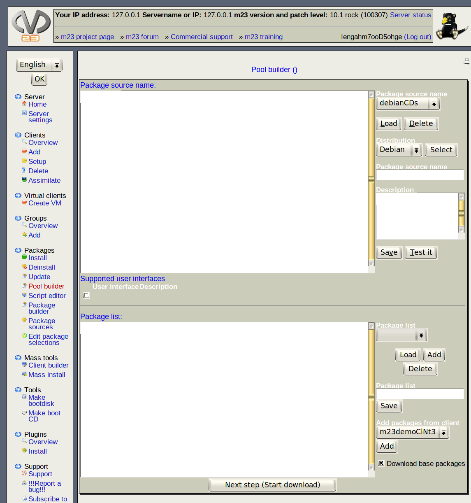

- Select drive: Choose a mount point from which to copy your packages and hit ''Read drive''.
- Status: Hitting ''Check drive state''will show the current status of this drive and the size of the package source hosted on it.
- Read additional media: It is possible to add additional media as well to your pacakge source after the initial copy.
- Create index: Hitting ''Next step (Create package index)'' after you added all media you wanted will continue the process.
root
2017-12-13